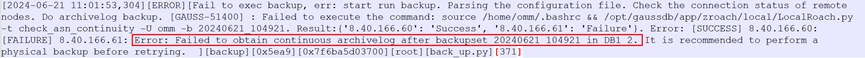

A GaussDB T log backup job fails and a message indicating an internal error is displayed in the job details on the OceanProtect WebUI. Obtain the database_plugin.log files of all nodes from the host where the client is installed and the error is reported, and query the error information in logs. The following shows an example of the log information.

GaussDB T automatically cleans archive logs based on the parameter settings. After archive logs are cleaned, the following abnormal scenarios may occur based on the number of cleaned archive logs:
ALTER SYSTEM SET PARAMETER='VALUE'